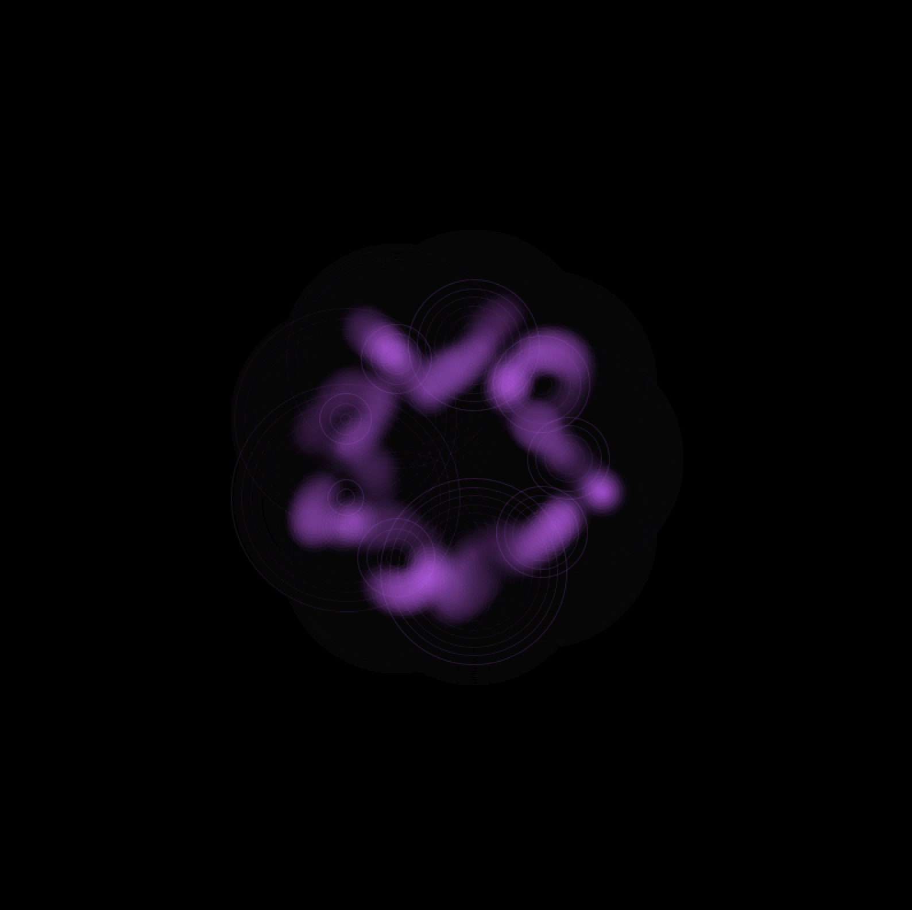
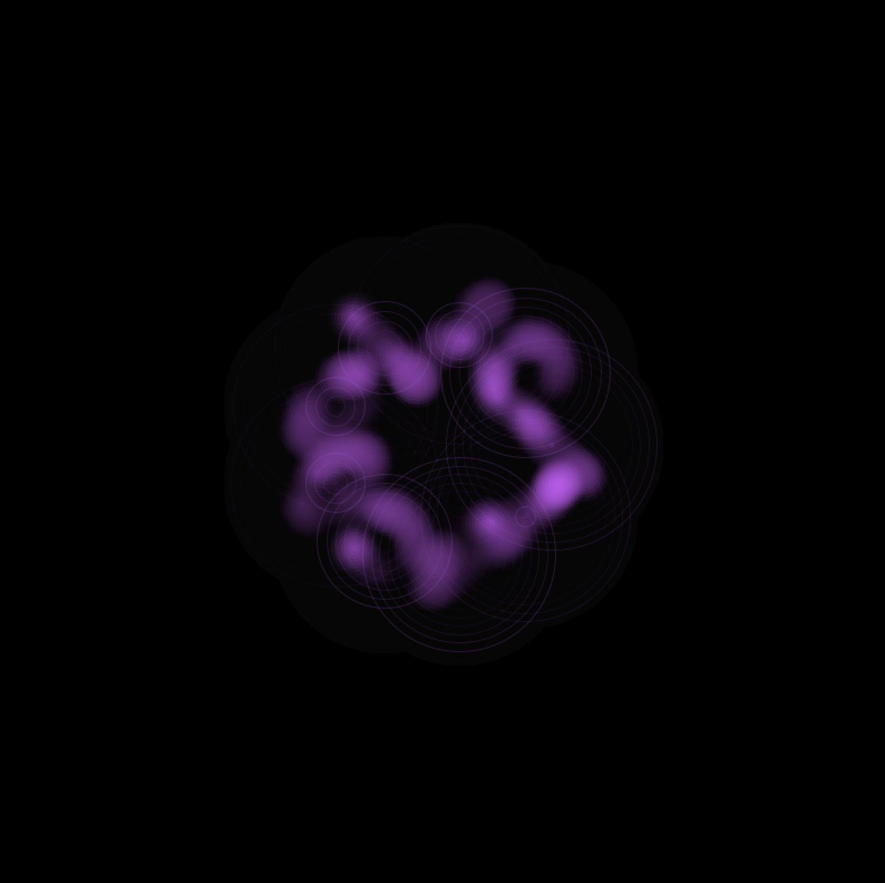
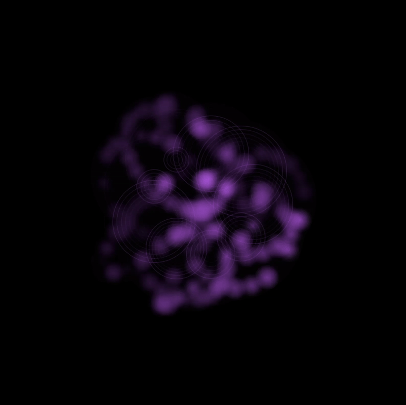
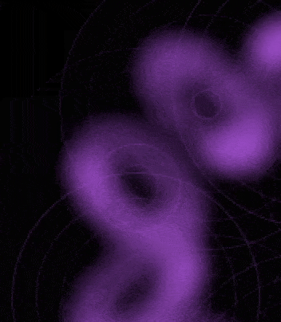

Yewon is a computational designer.

Project Overview
This project visualizes the phenomenon of wave interference in real time. You can see the patterns created by waves from a point source interfering with each other.
Physical Wave Theory and Implementation
Wave Formula Implementation
Implementation based on the basic equation of a wave (A * sin(kx - ωt + φ)):
k: Wave number (2π/wavelength)
ω: Angular frequency (2πf)
φ: Initial phase
ω: Angular frequency (2πf)
φ: Initial phase
Wave Interference Calculation
Core logic for calculating interference between point sources:
This calculates interference effects considering distance-based attenuation and phase differences.
Experimental Results
🌊 Making wave patterns
When you're creating wave patterns in Processing, you'll find that really small changes in settings can give your work a completely different feel. Let me share some of my experiments with you!
Wavelength(파장)

Short Wavelength(20)

Long Wavelength(200)
The wavelength is the parameter that determines the period of the wave. In my experiments, I found that the change in wavelength was more subtle than I expected. When I reduced the wavelength from 50 to about 19, I noticed that the waves oscillated a little more tightly. However, this difference isn't as dramatic as I thought it would be, and wavelength seems to produce more interesting changes when combined with other parameters (like amplitude or attenuation).
진폭(amplitude)
 Low Amplitude(10)
Low Amplitude(10)

High Amplitude(100)
The amplitude is my favorite🤍 parameter, which determines the range of movement of the wave. In my experiments, I've found that when the amplitude is set low (around 10-30), the circles created by each wave move in a small radius in place, creating a stable pattern. On the other hand, setting the amplitude higher (80-100) causes the circles to move over a larger range, creating a dynamic and active pattern. Especially at higher amplitudes, you can see that the waves travel farther and interfere more with other waves.
Damping(감쇠)

High Damping Rate
 Low Damping Rate
Low Damping Rate
The damping rate determines how far the waves can spread out. If you set the damping value high, the waves will disappear quickly, creating isolated patterns that look like tiny drops of water around each circle, while if you set it low, the waves will spread out farther, creating complex patterns that look like the whole canvas is connected.
You can combine parameters to create fun and varied movements!
 Dense pattern. Fast oscillation, amplitude is medium and you can see it moving in a narrow range, damping is set high so the waves don't dissipate as much
Dense pattern. Fast oscillation, amplitude is medium and you can see it moving in a narrow range, damping is set high so the waves don't dissipate as much
 Spread pattern. Slow oscillation, moving in a wide range
Has a long wavelength, resulting in a pattern that seems to spread out in a relaxed manner
Spread pattern. Slow oscillation, moving in a wide range
Has a long wavelength, resulting in a pattern that seems to spread out in a relaxed manner
 Energetic pattern.
Very fast frequency and high amplitude, moving over a very wide range
Medium wavelength
Energetic pattern.
Very fast frequency and high amplitude, moving over a very wide range
Medium wavelength